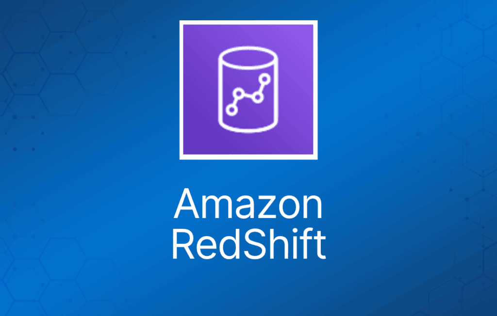

Amazon RedShift 是一个快速、完全托管的数据仓库，让你能够使用标准 SQL 和现有的商业智能（BI）工具，简单且低成本地分析所有数据。Amazon RedShift 是一个 PB 级的集群式数据仓库，是基于 SQL 的数据仓库，用于分析型应用。
Amazon RedShift 是一种联机分析处理（OLAP）类型的数据库，可以对 PB 级的结构化数据运行复杂的分析查询，采用复杂的查询优化、高性能本地磁盘上的列式存储以及大规模并行查询执行。Amazon RedShift 也非常适合为商业智能处理海量数据。
Amazon RedShift 的优势
Amazon RedShift 的好处如下：
与一些其他本地部署的数据仓库平台相比，Amazon RedShift 极具成本效益。
Amazon RedShift 兼容 PostgreSQL，提供 JDBC 和 ODBC 驱动，开箱即可兼容大多数商业智能工具。
具备并行处理和列式数据存储特性，针对复杂查询进行了优化。
可以通过 Amazon RedShift Spectrum 直接查询 S3 上的数据文件。
Amazon RedShift 比传统 SQL 数据库快 10 倍。
Amazon RedShift 可以存储海量数据，但无法实时摄取海量数据。
Amazon RedShift 使用列式数据存储：
- 数据按列（而非按行）顺序存储。
- 列式数据库非常适合数据仓库和分析场景。
- 所需 I/O 更少，极大地提升了性能。
Amazon RedShift 提供高级压缩：
- 数据按列顺序存储，带来更好的性能和更少的存储空间占用。
- Amazon RedShift 自动选择压缩方案。
Amazon RedShift 提供良好的查询性能和压缩能力。
Amazon RedShift 通过将数据和查询分布到所有节点，实现大规模并行处理（MPP）。
可用性与持久性
Amazon RedShift 使用复制和持续备份来增强可用性、提升持久性，并能自动从组件和节点故障中恢复。
只在单个 AZ 中可用，但你可以将快照恢复到另一个 AZ。
或者，你也可以通过将同一组 Amazon S3 输入文件中的数据加载到位于不同 AZ 的两个 Amazon RedShift 数据仓库集群中，实现在多个 AZ 中运行数据仓库集群。
Amazon RedShift 在数据仓库集群内复制你的数据，并将数据持续备份到 Amazon S3。
Amazon RedShift 始终保留数据的三份副本：
- 原始数据。
- 计算节点的副本（在集群内）。
- S3 上的一份备份。
Amazon RedShift 提供持续/增量备份：
- 集群内的多份副本。
- 到 S3 的持续增量备份。
- 跨区域的持续增量备份。
- 流式恢复（streaming restore）。
Amazon RedShift 对以下故障提供容错能力：
- 磁盘故障。
- 节点故障。
- 网络故障。
- AZ/区域级别的灾难。
发生节点故障时，在预置替代节点并将其加入数据库之前，数据仓库集群将无法进行查询和更新。
Amazon RedShift 的高可用性：
- 目前 Amazon RedShift 不支持 Multi-AZ 部署。
- 最佳的高可用方案是使用多节点集群，它支持数据复制和节点恢复。
- 单节点 Amazon RedShift 集群不支持数据复制，如果磁盘损坏，你必须从 S3 上的快照恢复。
Amazon RedShift 可以将你的快照异步复制到另一个区域的 S3，用于灾难恢复（DR）。
单节点集群不支持数据复制（在故障场景下需要从快照恢复）。
扩缩容需要几分钟的不可用时间（通常在维护窗口内进行）。
在扩缩容操作期间，Amazon RedShift 会将数据从现有数据仓库集群的计算节点并行移动到新集群的计算节点。
默认情况下，Amazon RedShift 将备份保留 1 天，最多可以配置为 35 天。
删除集群时，你可以选择生成并保留一个最终快照。
删除集群时，手动备份不会被自动删除。
安全性
可以从 S3 加载加密数据。
支持客户端应用与 Amazon RedShift 数据仓库集群之间的 SSL 传输加密。
使用 VPC 实现网络隔离。
静态数据加密（AES 256）。
审计日志以及与 AWS CloudTrail 的集成。
Amazon RedShift 可以代为管理密钥，你也可以通过 HSM 或 KMS 自行管理。
计费
按计算节点小时计费，每小时 1 个单位（仅计算节点，leader node 不收费）。
备份存储——S3 上的存储。
数据传输——同一区域内 Amazon RedShift 与 S3 之间的数据传输不收费，但其他场景可能会产生费用。
提供 HDD 和 SSD 存储选项。
单个节点的大小为 160GB，集群可以创建到 1 PB 甚至更大。
多节点集群由以下部分组成：
Leader node（领导节点）：
- 管理客户端连接并接收查询。
- 简单的 SQL 终端节点。
- 存储元数据。
- 优化查询计划。
- 协调查询执行。
Compute node（计算节点）：
- 存储数据并执行查询和计算。
- 本地列式存储。
- 所有查询、加载、备份、恢复、调整大小操作均并行/分布式执行。
- 最多 128 个计算节点。
Amazon RedShift Spectrum 是 Amazon RedShift 的一项功能，让你能够对 Amazon S3 中 EB 级的非结构化数据运行查询，无需加载或 ETL。
Amazon RedShift 的使用场景
作为企业运营的数据仓库：许多组织需要处理来自多个来源的数据，例如广告、客户关系管理和客户支持系统。
作为集中式存储库，Redshift 可以以统一的 schema 和结构存储来自多个来源的数据，进而支撑全企业范围的报表和分析。
在商业智能和分析领域，Redshift 对 TB 级数据的快速查询执行能力使其成为绝佳选择。Tableau 等 BI 工具通常将 Redshift 作为底层数据库（否则这些工具在对大型数据集执行查询和 join 时会力不从心）。
组织可能选择通过嵌入式分析和"分析即服务"将数据开放给客户，从而实现数据变现。在这些场景下，Redshift 的数据共享、搜索和聚合能力使其成为理想之选，因为它允许客户仅访问相关的数据子集，同时保持其他数据库、表或行的机密性。
只要集群资源充足，Redshift 的性能就是稳定且可预测的。因此，它是报表和计算等数据驱动型应用的热门选择。
数据库迁移与变更数据捕获（CDC）：可以使用 AWS Database Migration Service (DMS) 将业务数据存储中的变更复制到 Amazon Redshift。这样做通常是为了在分析时获得更大的灵活性，或者用于从遗留数据仓库迁移。